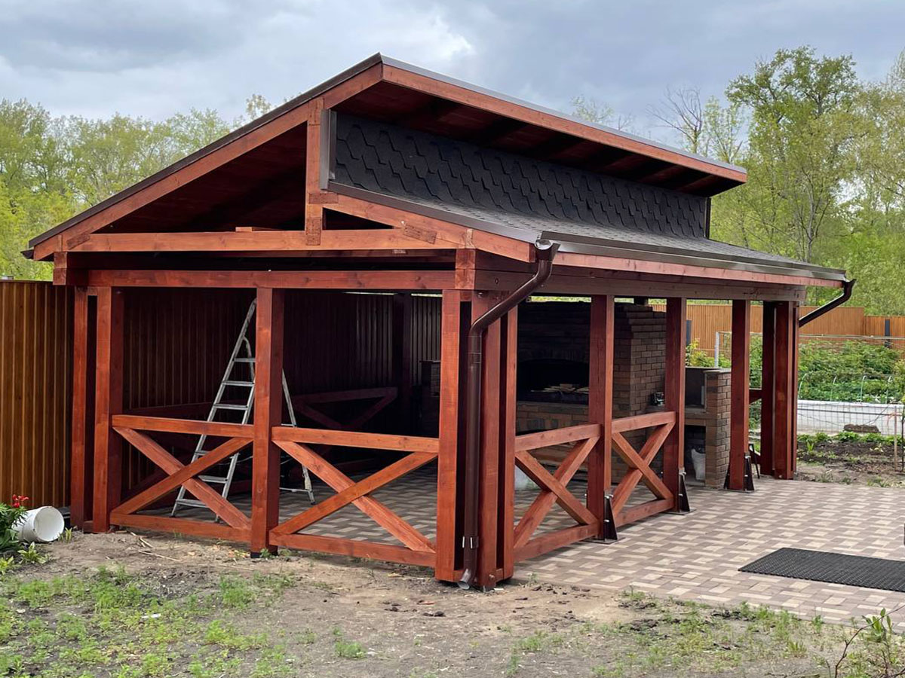
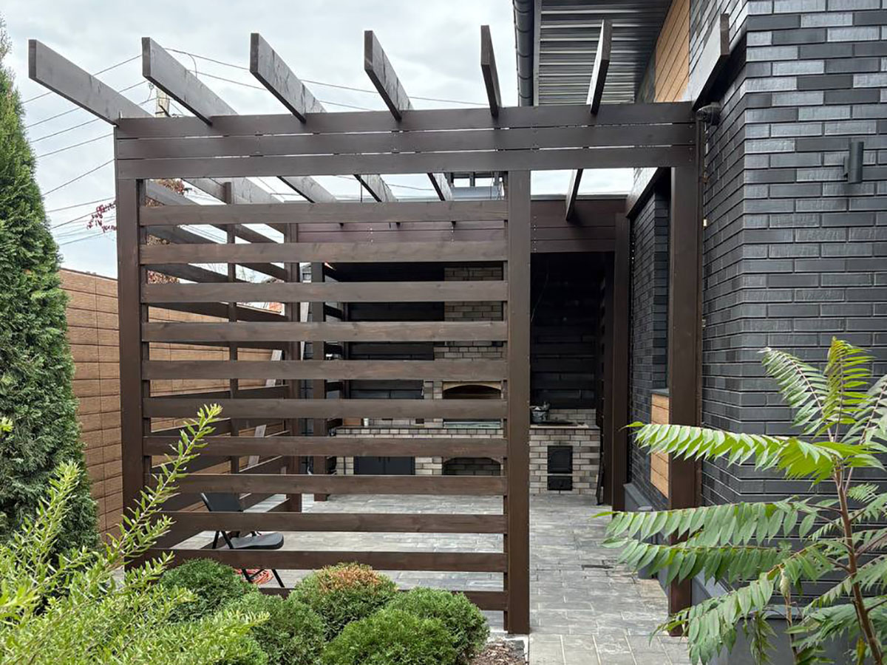
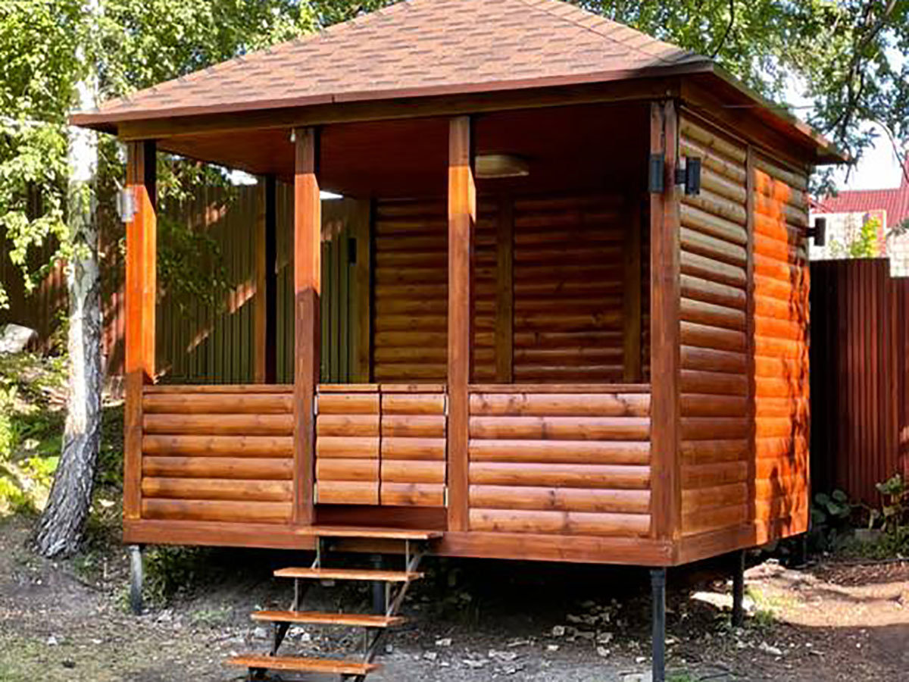
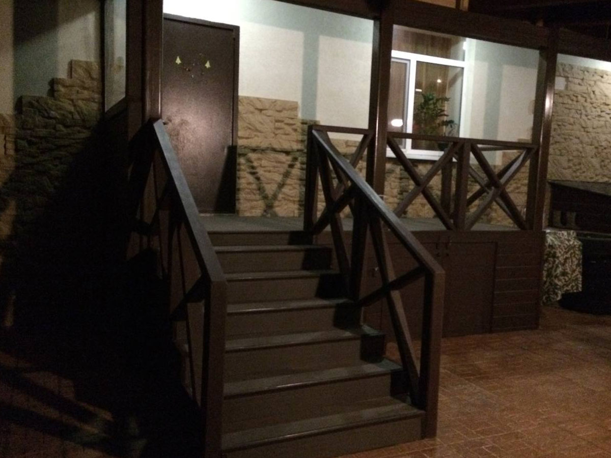

Беседки, террасы, веранды
Строительство беседок, террас и веранд в Самаре
Создаем комфортные и красивые зоны отдыха на участке: беседки, террасы и веранды под ключ. Проектируем с учетом архитектуры дома, ландшафта и ваших пожеланий.
Индивидуальный дизайн • Надежные материалы • Продуманные решения • Строительство под ключ
Примеры наших работ
Небольшая подборка беседок, террас и веранд, которые мы строим под разные задачи и форматы участков.



Беседки, террасы и веранды на заказ
Загородный дом - это не только жилое пространство, но и возможность создать комфортную зону отдыха на свежем воздухе. Беседки, террасы и веранды позволяют организовать удобное место для семейных ужинов, встреч с друзьями, отдыха в тени в жаркий день или уютных вечеров на природе.
Мы занимаемся строительством беседок, террас и веранд в Самаре и Самарской области под ключ. Проектируем конструкции так, чтобы они не только красиво выглядели, но и были удобны в повседневной эксплуатации. Учитываем особенности участка, расположение дома, освещенность, розу ветров и пожелания клиента.
В результате вы получаете не просто постройку, а полноценную зону отдыха, которая становится важной частью вашего участка и используется каждый день.
Почему стоит заказать у нас
- Индивидуальное проектирование под участок и дом
- Современный и аккуратный внешний вид
- Надежные и долговечные материалы
- Продуманная функциональность и удобство
- Возможность закрытых и утепленных решений
- Строительство под ключ с установкой
Зачем нужна беседка, терраса или веранда
Зона отдыха на участке - это то, что делает загородную жизнь действительно комфортной. Без нее даже красивый дом часто ощущается незавершенным.
Беседка, терраса или веранда позволяют вынести часть повседневной жизни на свежий воздух: завтракать на улице, проводить время с семьей, принимать гостей, отдыхать в тени или укрываться от дождя.
При правильном проектировании такие конструкции становятся естественным продолжением дома и гармонично вписываются в пространство участка.
Какие конструкции мы строим
Беседки
Отдельно стоящие конструкции для отдыха. Могут быть открытыми или закрытыми, с крышей, ограждениями и различными вариантами исполнения. Отлично подходят для организации зоны отдыха, барбекю или встреч с друзьями.
Террасы
Терраса - это продолжение дома, открытая или частично закрытая площадка, которая используется как место отдыха или приема гостей. Может быть пристроенной или отдельно стоящей.
Веранды
Более закрытые конструкции, часто с остеклением. Подходят для использования в прохладное время года и защищают от ветра и осадков.
Закрытые и утепленные решения
При необходимости можно сделать конструкцию, пригодную для использования не только летом, но и в межсезонье. Это особенно актуально для веранд и закрытых террас.
Идеи использования
- зона отдыха с семьей;
- летняя кухня;
- барбекю зона;
- место для приема гостей;
- пространство для работы на свежем воздухе;
- уютная зона отдыха на даче.
Строительство беседок и террас в Самаре
Если вы планируете строительство беседки или террасы в Самаре, важно заранее продумать, как именно будет использоваться эта зона. От этого зависит конструкция, размеры, материалы и общий внешний вид.
Мы проектируем и строим беседки, террасы и веранды в Самаре и Самарской области, учитывая все нюансы: расположение участка, архитектуру дома, пожелания клиента и функциональность.
Индивидуальный подход позволяет создать не просто красивую конструкцию, а удобное пространство, которое действительно используется и приносит удовольствие.
Кому подойдет услуга
Для частных домов
Отличное решение для создания комфортной зоны отдыха рядом с домом.
Для дачи
Позволяет сделать участок более удобным и уютным для отдыха.
Для семейного отдыха
Удобное пространство для совместного времяпрепровождения.
Для приема гостей
Беседка или терраса становятся центром общения и отдыха.
Материалы и надежность
При строительстве беседок и террас важно использовать качественные материалы, которые выдерживают погодные условия и сохраняют внешний вид на протяжении многих лет.
Мы подбираем решения в зависимости от проекта, обеспечивая прочность, устойчивость и эстетичный внешний вид конструкции.
Индивидуальный проект под ваш участок
Каждая беседка или терраса проектируется с учетом конкретного участка. Это позволяет создать гармоничное пространство, которое выглядит естественно и удобно в использовании.
- размеры и форма конструкции;
- расположение на участке;
- тип конструкции (открытая или закрытая);
- дополнительные элементы;
- внешний вид и стиль.
Как проходит работа
1. Консультация
Обсуждаем задачи, пожелания и особенности участка.
2. Проектирование
Предлагаем оптимальное решение по конструкции и дизайну.
3. Расчет стоимости
Формируем смету с учетом всех параметров.
4. Строительство
Выполняем работы в согласованные сроки.
5. Сдача объекта
Передаем готовую конструкцию, полностью готовую к использованию.
Сколько стоит беседка или терраса
Стоимость зависит от размеров, типа конструкции, материалов и дополнительных элементов. Каждый проект рассчитывается индивидуально.
Оставьте заявку, чтобы получить расчет стоимости под ваш участок.
Часто задаваемые вопросы
Можно ли сделать террасу к дому?
Да, мы строим пристроенные террасы с учетом архитектуры дома.
Можно ли использовать зимой?
Да, при утеплении и закрытой конструкции.
Сколько времени занимает строительство?
Зависит от проекта, обычно от нескольких дней до нескольких недель.
Можно ли сделать индивидуальный дизайн?
Да, все проекты разрабатываются индивидуально.
Создадим идеальное место для отдыха
Беседка, терраса или веранда - это не просто постройка, а место, где вы будете проводить время с семьей и друзьями.
Мы поможем создать красивое, удобное и надежное пространство, которое станет частью вашего дома и участка.
Оставьте заявку, чтобы получить консультацию и расчет стоимости.